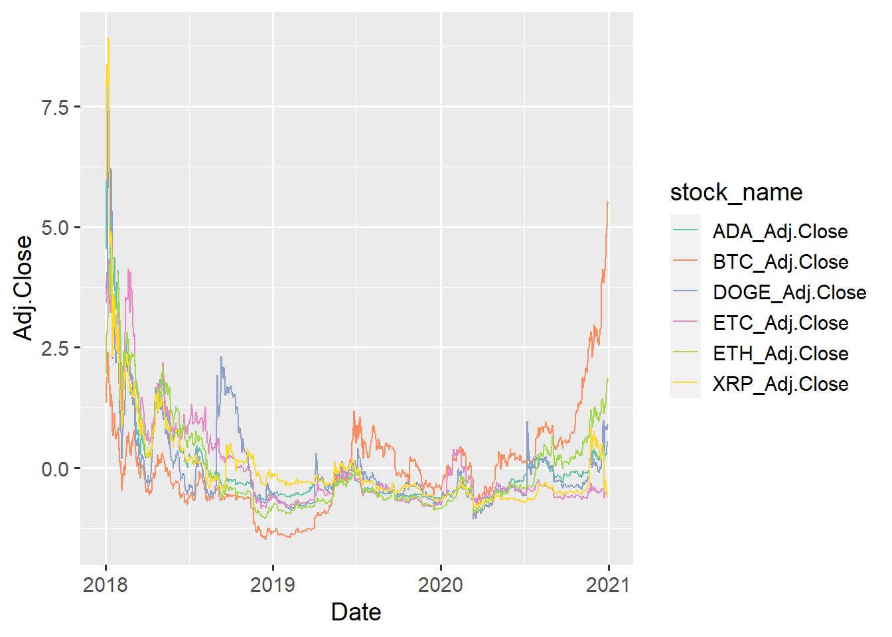
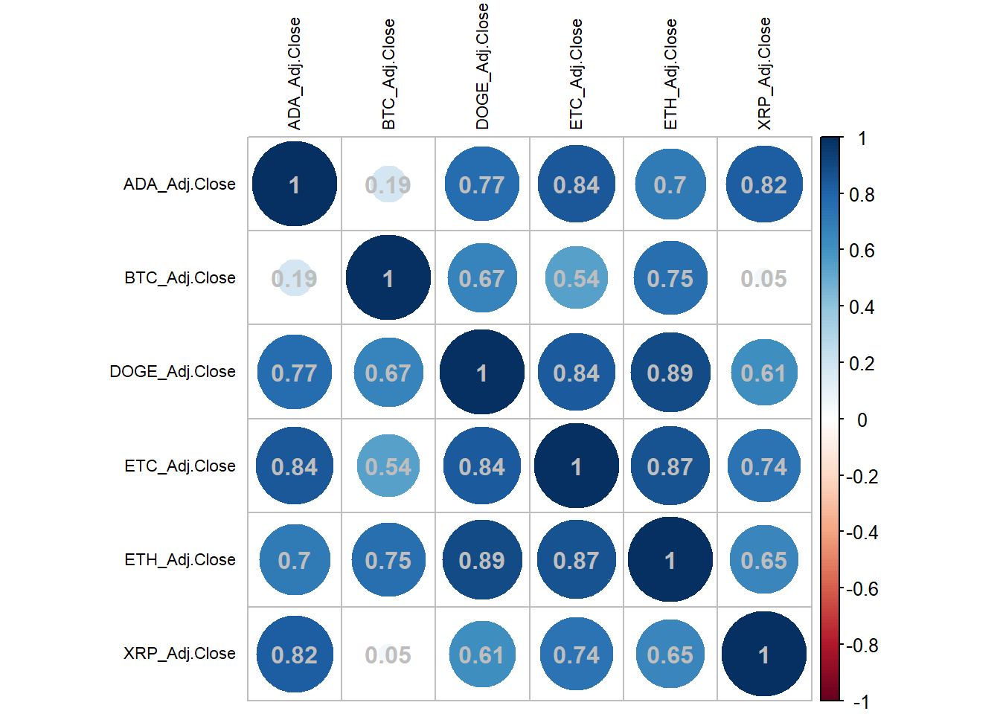
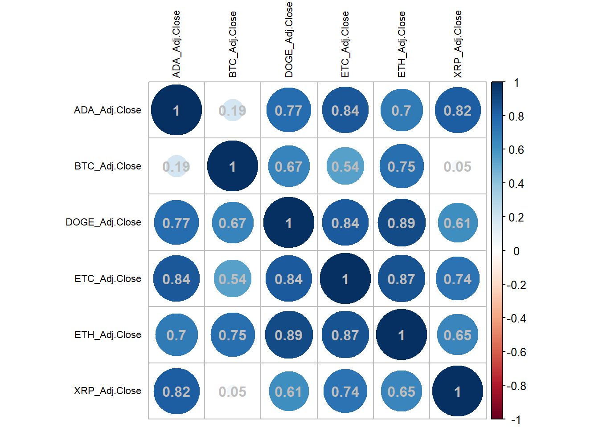

Chapter 5 Results
5.1 Distribution and Dependency of Closing Price
5.1.1 Color Palette
We choose qualitative color palette to highlight visual differences between cryptocurrencies. Here we choose “Set2” in RColorBrewer.

5.1.2 Dependency between Volume and Closing price
We try to find out if there is any dependency between volume and closing price so that we can combine them together to analyze later. The y-axis is limited by the difference of orders of magnitude between volume of each kind of cryptocurrency stock. Therefore, we have to split the figure of 6 lines to 6 figures as below.
 Note that the magnitude of volume is so large that almost all points gather at the lower left corner and we use
Note that the magnitude of volume is so large that almost all points gather at the lower left corner and we use log(Volume) instead of Volume.
We can draw some conclusions below.
Closing prices of each stock is independent of volumes of that because most points of each figure are distributed on a horizontal line respectively.
Some stocks like ADA, DOGE and XRP, have similar outlier pattern. We should research their correlation later.
Now We should drop volumes and only concentrate on closing prices.
5.1.3 Distribution of Closing Price
First we want to research the changes of each stock over date. Limited by different magnitudes, we still have to draw 6 figures respectively.

 - Here we cannot say directly that which one is more worthy of investing because some stocks are so unstable that we don’t know whether the trend will continue in the next few days or months.
- Here we cannot say directly that which one is more worthy of investing because some stocks are so unstable that we don’t know whether the trend will continue in the next few days or months.
- From these figures above, we find that some stocks have similar distribution within a period of time (e.g. ADA and DOGE in 2020), which inspires us that we can suppose trends of some relatively stable stocks will continue for a period of time and use their trends to help to predict the future trend of some unstable stocks. It’s further researched in the part of time series analysis.
5.1.4 Distribution of Scaled Closing Price
Considering finite funds of investors, some rising stocks like BTC seem currently promising but their prices are much higher than others too, which means that investors need to put more money first. Thus, we standardize all closing prices of each stock and draw a joint line chart and ridge line chart so that we can eliminate the effect of magnitude.


Here we can draw some conclusions.
BTC has three cluster center where a large number of standardized prices gather. It implies that BTC is unstable and the most difficult one to predict.
However, BTC has extremely rising tendency which seems likely to return to the level of the beginning of 2018, so speculators may take the risk of stopping rising and a sharp decline to invest on it. At least a short-term investment on BTC is plausible.
5.2 Correlation between pairs of stocks
5.2.1 Correlation Analysis
To solve unstability, we can research on correlation to use highly correlated stocks to help to predict. Thus, we first draw a matrix of scatterplots of closing prices of each stock to have a preliminary exploration on the correlation pattern. Then we draw a alluvial chart and a parallel coordinates chart.

From the matrix of scatterplots, we can draw a conclusion that BTC have at least two correlation patterns. It’s the most distinctive one and the others do have linear or non-linear correlations to a certain extent.
## [1] "English_United States.1252" The alluvial chart visualizes the change of scaled closing prices in 6 stocks composition over time. If there is any intersection of different colored fills, it means that these intersected stocks have different changing tendencies during months of the intersection and they have poor correlation here. If not, we can say that they have great correlation.
The alluvial chart visualizes the change of scaled closing prices in 6 stocks composition over time. If there is any intersection of different colored fills, it means that these intersected stocks have different changing tendencies during months of the intersection and they have poor correlation here. If not, we can say that they have great correlation.
Note that because of standardization, it’s reasonable that the order of colored fills reverse when the scaled closing prices reverse, so we should just ignore this kind of intersections.
Here we find the fact that monthly data correlations are highly obvious on every pair of stocks except those involving BTC and ETC.
Correlation in 2020 is weaker than those in other years.
We must further focus on 2020 by drawing a parallel coordinates chart with d3 because it’s the closest to the present and have the greatest effect on tendency predict.
We can draw several conclusions on the data of monthly closing prices as below.
- ETH ,XRP and ADA have high correlation with each other in 2020.
- DOGE has high correlation with ADA since May in 2020.
- ETC and XRP has similar lagged tendency since March in 2020.
- BTC is the most distinctive one with tendency different from the others.
5.2.2 Correlation Coefficient
We guess that whether correlations will be higher if we study the correlation of one-day trading returns rather than that of direct closing prices.
Thus, we draw two correlation coefficient matrix plots based on one-day returns and daily closing prices.

Note that standardization won’t change correlation coefficient so we can continue to use scaled data.
Correlations of returns are much lower than those of closing prices, so we should discard our guess.
BTC is almost uncorrelated with other stocks.
Now we try to split the data to 3 different years and see if the correlation will fluctuate greatly.
 

Different from what the monthly data shows in the previous alluvial chart, in terms of 2018, we find the daily data of each stock is highly correlated with each other.
When eliminating BTC, the correlation in 2019 is merely little bit weaker than that in 2018.
When eliminating ETC, the correlation in 2020 is merely little bit weaker than that in 2018.
Eliminating BTC in 2019 and ETC in 2020, other stocks are significantly positively related with each other.
5.3 Time Series
5.3.1 Loess Smooth
First let’s recall the distribution of closing prices of each stock and fit a smooth line by method of loess to see their tendency.

It seems that ETH and BTC are rising and worthy of investment.
However, We cannot judge whether the closing prices is greatly affected by irregular disturbances, which will cause wrong prediction of tendency.
5.3.2 STL Decomposition of BTC
To separate long-term tendency, seasonal variation and irregular disturbance, we use STL decomposition of time series. Compared to classical decomposition, STL can get a stable decomposition without affected by outliers. However, STL is an additive decomposition, i.e. \(Y=T+S+R\). T, S and R mean trend factor, seasonal factor, remainder factor respectively. The seasonal factor contains both information about seasonality and periodicity.
Additive decomposition has some disadvantages as below.
When we predict the trend factor, additive decomposition lacks data in the beginning and the end because of moving average.
It is insensitive to sharp increases and decreases and each component of it is too smooth, so it is difficult to capture influence of unexpected information.
The prediction of its seasonal factor is so rigid. Its basic assumption is that the periodicity is fixed, and if its periodic fluctuation changes over time, additive decomposition cannot capture this information.
Thus, we use multiplicative decomposition, i.e. \(Y=T*S*R\) instead. However, R doesn’t provide such an option. We apply logarithmic function to the original data and apply exponential function after composition when predicting. This lead to multiplicative decomposition \(Y=\exp(\log(T)+\log(S)+\log(R))\).
Note that we use \(BoxCox(x,\lambda)\) rather than logarithmic function here because when we choose \(\lambda=0\) they are equivalent. In addition, when we choose \(\lambda=1\) it’s equivalent to additive decomposition.
- We can see that BTC has a good rising trend as we analyze in the previous part. However, its remainder (i.e. irregular disturbance) is so unstable that the prediction of 30 days in the future has a decreasing trend.
5.3.3 Decomposition over Monthly Data
Since we suppose investors do not speculate on these stocks expect for BTC, we can do decomposition on monthly time series rather than daily time series because we can reduce the number of predicting data (e.g. 6 months) to improve confidence level of our prediction.
As we can see from each stock’s decomposition
ADA and ETH have a great rising trend and rising seasonal factor but we should notice that ETH has unstable fluctuation which we will check on the daily time series later.
ETC is unworthy of investing because its trend is too horizontal.
XRP and DOGE has a good rising trend and stable random fluctuation but we should check on their prediction later.
5.3.4 Forecasts from STL
We predict seasonal factor according to its periodicity and predict trend factor according to its loess curve. Then we combine them and get prediction of closing prices (\(Y=\exp(\log(T)+\log(S)+\log(R))\)).
From 6-month forecasts of each stock, we can draw some conclusions as below.
XRP will decrease steadily in the new few months so we should not invest on it.
ADA and DOGE will fall steadily and then start to rebound in the next few month so we should buy in after the beginning of increasing.
ETH has a relatively stable general rising prediction in the long term but as we said before, we should check its remainder outliers later.
5.3.5 Remainder Analysis
Now we check the number of outliers of remainder. For simplicity, we regard those greater than \(Q_{99}\) or less than \(Q_{1}\) as outliers.
Analyzing on remainders of the daily time series, we find that
Remainder outliers of ETH gather in 2018.
XRP is quite unstable recently and hard to predict.
BTC and ETC have few outliers in 2020 which means they have extremely stable irregular fluctuation and their performances are almost completely influenced by their trend and seasonal factor.